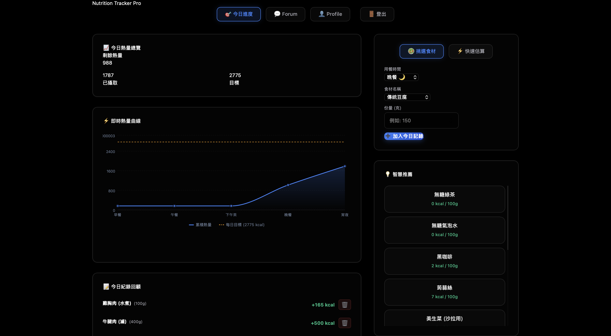
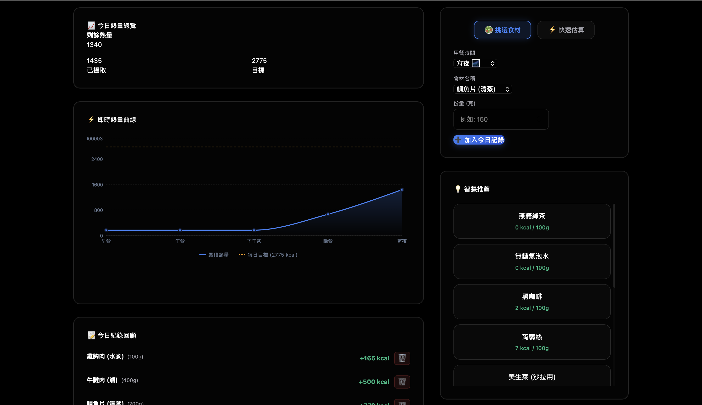
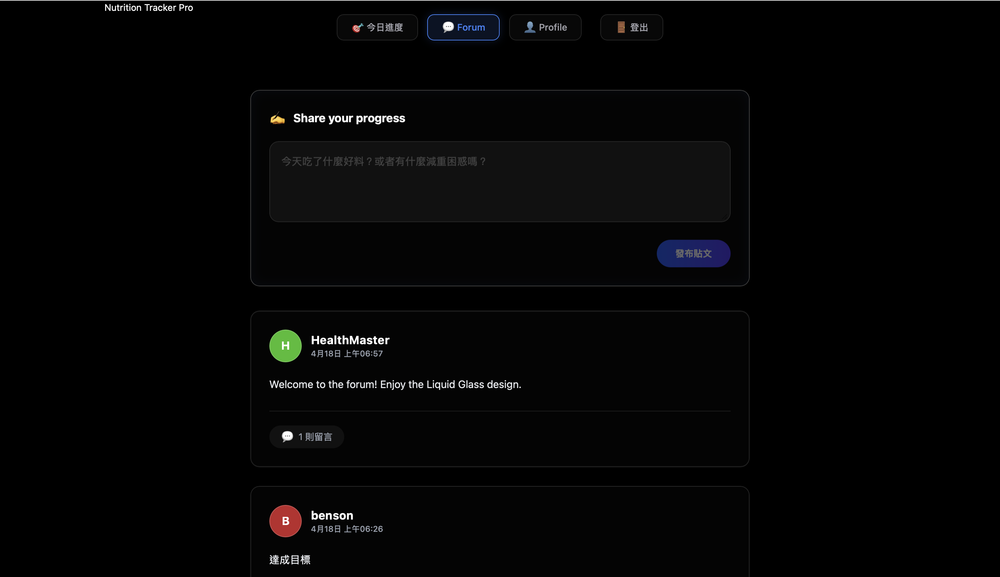

開發歷程與系統功能實錄
從 3D 視覺實驗到 Liquid Glass 風格的完整技術迭代
專為現代健康生活打造的 Web 應用程式。
揚棄傳統生硬樣式，全面採用前衛的 「Liquid Glass (液態玻璃)」 視覺風格，
並具備嚴謹的個人化數據計算、動態視覺化與社群交流功能。

使用者初次進入系統必定先抵達 Profile 頁面，確保核心健康資訊完整性。
捨棄預設值，實作嚴格欄位驗證 (SweetAlert)，強力阻擋無效數據寫入系統。
背景自動套用公式精準計算，即時同步專屬目標熱量至儀表板。
當新增飲食紀錄時，左側的面積折線圖將會「即時且平滑」地向上攀升，直觀且動態地反映當下熱量累積與目標線的距離。
右側清單加入專屬內部滾動條，保持版面緊湊乾淨；並強力清除了開發期的無效測試資料。


解決切換帳號後「貼文作者異常改變」的問題。發文者名稱在送出當下即永久綁定至資料庫物件，確保 Forum 呈現真實一致。
實作標準雙重確認登出流程。一鍵徹底清空 LocalStorage 中所有的個人 Session 資料，並安全重導向回首頁。
感謝您的聆聽與觀看